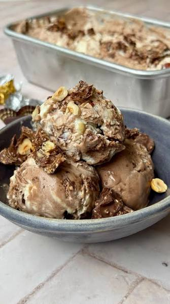

Ice cream

Ice cream is a beloved treat enjoyed by people of all ages around the world, especially during hot summer days. Its history goes back thousands of years to ancient civilizations like Persia and China, where people mixed snow or ice with fruit, milk, and flavorings. Over time, trade routes brought these icy recipes to Europe, where cooks added rich cream, eggs, and unique styles like Italian gelato. Today, making commercial ice cream involves combining liquid dairy and sweeteners with dry ingredients like stabilizers, then pasteurizing and churning the mixture while freezing it to add tiny air pockets for a smooth texture. Classic flavors like vanilla, chocolate, and strawberry remain favorites, while modern varieties feature endless combinations of nuts, fruits, cookies, and candy piece.
ingredients
- 2 cups whipping cream
- 1 can sweetened condensed milk
Steps to make
- Whip the heavy cream: Pour the cold heavy cream into the chilled bowl. Beat on medium-high speed for 3 to 5 minutes until stiff peaks form. Be careful not to overwhip, or the cream will turn grainy or separate into butter.
- Combine the flavor base: In a separate small bowl, gently mix the chilled sweetened condensed milk and vanilla extract together
- Fold the ingredients: Pour the condensed milk mixture into the whipped cream. Use a spatula to gently fold the ingredients together. Do this slowly so you do not deflate the airy whipped cream.
- Freeze the mixture: Transfer the smooth mixture into a freezer-safe metal pan or loaf pan. Smooth the top with a spatula. Cover it tightly with plastic wrap so the plastic touches the surface of the ice cream to prevent ice crystals.
- Set and serve: Freeze for 6 to 8 hours (or overnight) until completely firm. Scoop and enjoy